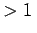

Inhalt Index DeskTop Bronstein

 Algebra und Diskrete Mathematik Kryptologie Sicherheit von Kryptosystemen
Algebra und Diskrete Mathematik Kryptologie Sicherheit von Kryptosystemen


Außer durch Anwendung von Kryptofunktionen ist es auch möglich, einen Klartext durch kryptologische Codes zu verschlüsseln. Darunter versteht man eine bijektive Abbildung von einer Teilmenge A' der Menge aller Wörter über einem Alphabet A auf eine Teilmenge B' der Menge aller Wörter über einem Alphabet  . Die Menge aller Original-Bild-Paare dieser Abbildung heißt Codebuch.
. Die Menge aller Original-Bild-Paare dieser Abbildung heißt Codebuch.
| Beispiel | ||||
|
Dem Vorteil, daß lange Klartexte durch kurze Nachrichten ersetzt werden können, steht der Nachteil gegenüber, daß gleiche Klartextteile durch gleiche Schlüsseltextteile ersetzt werden und auch nur teilweise kompromittierte Codebücher mit großem Aufwand komplett ausgetauscht werden müssen.
Im weiteren Text werden nur noch Verschlüsselungen mit Hilfe von Kryptofunktionen betrachtet. Diese haben den zusätzlichen Vorteil, daß keine vorherige Absprache über den Inhalt der auszutauschenden Nachrichten erfolgen muß.
Klassische Kryptooperationen sind Substitution und Transposition. Transpositionen sind in der Kryptologie spezielle, über geometrische Figuren definierte Permutationen. Im weiteren sollen die Substitutionschiffren genauer vorgestellt werden. Man unterscheidet monoalphabetische und polyalphabetische Substitutionen, je nachdem, ob ein Alphabet oder mehrere Alphabete zur Abfassung des Schlüsseltextes herangezogen werden. Allgemeiner spricht man auch von polyalphabetischen Substitutionen, wenn zwar nur ein Alphabet benutzt wird, jedoch die Verschlüsselung der Klartextzeichen von deren Position im Text abhängig ist.
Außerdem ist eine Einteilung in monographische und polygraphische Substitutionen sinnvoll. Im ersten Fall werden Einzelzeichen ersetzt, im zweiten Fall Zeichenfolgen einer festgesetzten Länge .